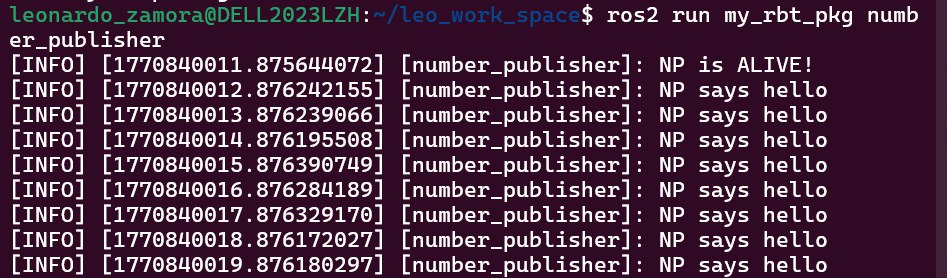
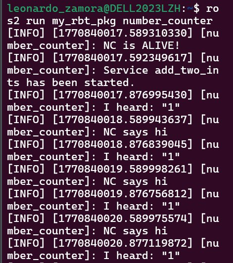
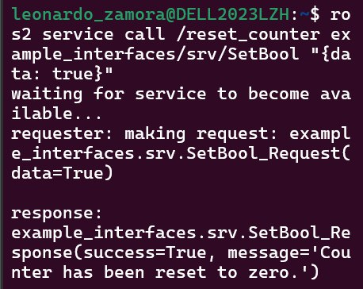
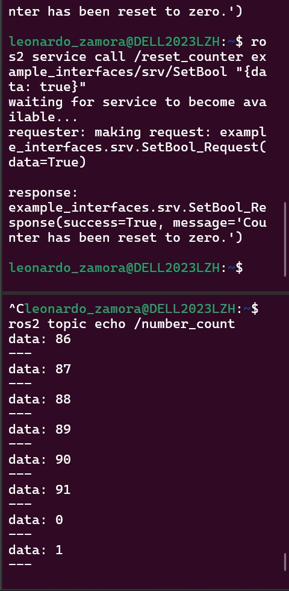
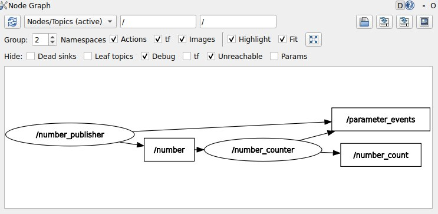

📚 ROS2 Services
Client / Server in ROS2
1) Resumen
- Activity name: ROS2 Services
- Team / Author(s): Leonardo Zamora Hernández
- Course / Subject: Applied Robotics
- Date: 16/02/2026
- Brief Description: Implementation of a Service Server within a node to reset a counter variable.
Add a functionality to reset the counter to zero:
- Create a service server inside the “number_counter” node.
- Service name: “/reset_counter”
- Service type: example_interfaces/srv/SetBool. Use “ros2 interface show” to discover what’s inside!
- When the server is called, check the boolean data from the request. If true, set the counter variable to 0.
2) Publisher Node
- Number Publisher Code
This node publishes a constant integer to the
/numbertopic.
#!/usr/bin/env python3
import rclpy
from rclpy.node import Node
from example_interfaces.msg import Int64
class myNode_function(Node):
def __init__(self):
super().__init__('number_publisher')
self.counter = 0
self.get_logger().info('NP is ALIVE!')
self.create_timer(1.0,self.print_callback)
self.publishers_ = self.create_publisher(Int64, 'number', 10)
def print_callback(self):
self.get_logger().info('NP says hello')
msg = Int64()
# msg.data = 'R2D2 says hello! Count: %d' % self.counter
msg.data = self.counter
self.counter = 1
self.publishers_.publish(msg)
def main(args=None):
rclpy.init(args=args) # Initialize rclpy
number_publisher = myNode_function()
rclpy.spin(number_publisher)
rclpy.shutdown() # Shutdown rclpy
if __name__ == "__main__":
main()
- Terminal Command:
- Execution: 
3) Service Server
This is an example on how to create a server:
import rclpy
from rclpy.node import Node
from loes_interfaces.srv import Multiply
class Add2Ints_server(Node): # MODIFY NAME
def __init__(self):
super().__init__("add_two_ints_server") # MODIFY NAME
self.server_ = self.create_service(Multiply, # SERVICE TYPE
"multiply", # SERVICE NAME
self.add_2ints_callback) # CALLBACK FUNCTION
self.get_logger().info("Service add_two_ints has been started.")
def add_2ints_callback(self, request: Multiply.Request, response: Multiply.Response):
#compute the sum of the two intwgresrs
response.result = request.x + request.y
self.get_logger().info(f"Incoming request: a={request.x}, b={request.y}, sum{response.result}")
return response
def main(args=None):
rclpy.init(args=args)
my_node = Add2Ints_server() # MODIFY NAME
rclpy.spin(my_node)
rclpy.shutdown()
if __name__ == "__main__":
main()
4) Subscriber & Service Server
- Number Counter Code
This node subscribes to
/numberto increment a counter. It also hosts a service server named/reset_counterthat resets the count to 0 when called.
#!/usr/bin/env python3
import rclpy
from rclpy.node import Node
from example_interfaces.msg import Int64
from example_interfaces.srv import SetBool
class myNode_function(Node):
def __init__(self):
super().__init__('number_counter')
self.counter = 0
self.get_logger().info('NC is ALIVE!')
self.create_timer(1.0,self.print_callback)
self.publishers_ = self.create_publisher(Int64, 'number_count', 10)
self.subscriber_= self.create_subscription(Int64, 'number', self.listener_callback, 10)
# Service Server Definition
self.server_ = self.create_service(SetBool, # SERVICE TYPE
"reset_counter", # SERVICE NAME
self.reset_counter_callback) # CALLBACK FUNCTION
self.get_logger().info("Service reset_counter has been started.")
def reset_counter_callback(self, request, response):
if request.data == True:
self.counter = 0
response.success = True
response.message = "Counter has been reset to zero."
else:
response.success = False
response.message = "Counter was not reset."
return response
def listener_callback(self, msg: Int64):
self.get_logger().info(f'I heard: "{msg.data}"')
#self.counter = msg.data
self.counter += msg.data
def print_callback(self):
self.get_logger().info('NC says hi')
msg = Int64()
msg.data = self.counter
self.publishers_.publish(msg)
def main(args=None):
rclpy.init(args=args) # Initialize rclpy
number_counter = myNode_function()
rclpy.spin(number_counter)
rclpy.shutdown() # Shutdown rclpy
if __name__ == "__main__":
main()
- Terminal Command:
- Execution:

5) Communication & Service Call
-
Testing the Service To test the functionality, we call the
/reset_counterservice from the terminal using theSetBoolinterface. We senddata: trueto trigger the reset logic defined in the server callback. -
Terminal Command:
- Execution:

-
Verification: The service returns success=True and the message "Counter has been reset to zero."
-
Monitoring:

The command to monitor the counter is:
- Nodes graph:
